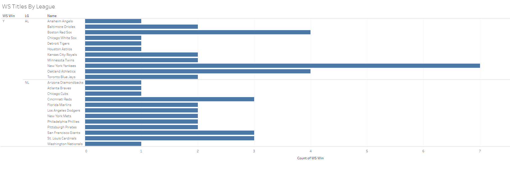
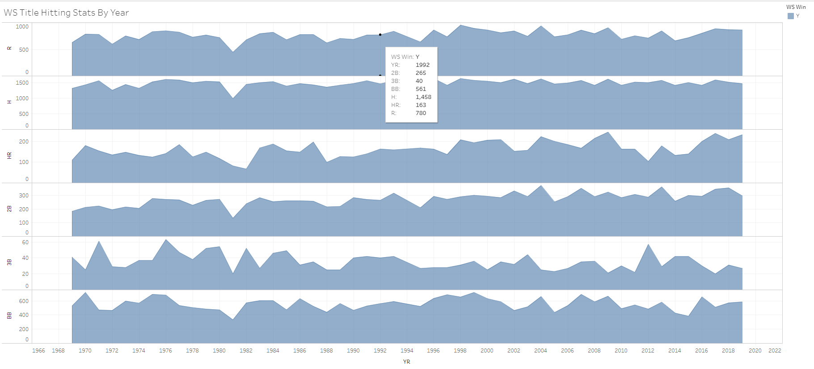
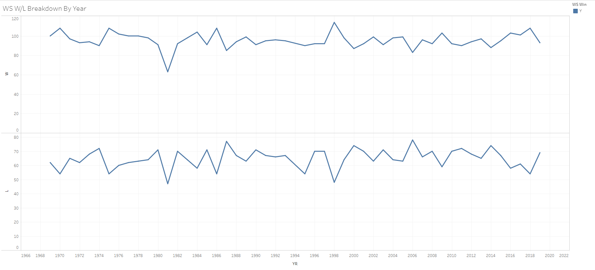

Project Overview
The purpose of our project is to examine MLB stats from (1969-Present) in order to build models that will predict (WS/LG) winners

League Wins
Hitting Stats
Wins per League
Fielding stats

Summary
The results from our models varied, and predicting winners was more difficult than we had anticipated. Even though NN provided the most accurate model, none of our models were reliable.
If presented with more time, we feel as if we can adjust our models to provide more accurate readings.
Resources
http://www.seanlahman.com/baseball-archive/statistics (MLB Stats)
https://sports.yahoo.com/how-the-field-of-dreams-mlb-dream-came-true-232040628.html (Background Image)